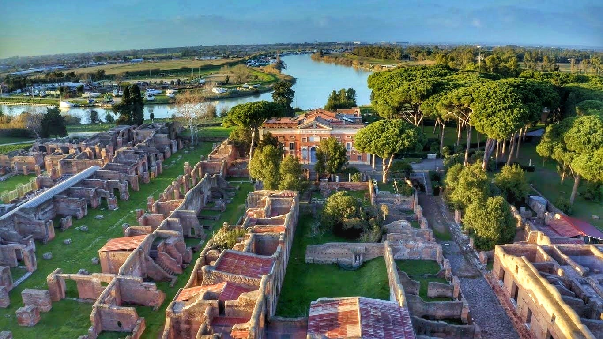

La vita e il lavoro in case-alveare
Il porto di Ostia, rinnovato sotto l'imperatore Claudio e successivamente ampliato da Traiano nel II secolo d.C., rappresentò un pilastro fondamentale per l'approvvigionamento di Roma. Situato strategicamente alla foce del Tevere, il porto permetteva di ricevere merci da tutto l'Impero Romano, facilitando lo stoccaggio e la distribuzione verso la capitale.
L'infrastruttura del porto includeva imponenti magazzini, banchine ben organizzate e sistemi di canalizzazione che garantivano efficienza e sicurezza. Le principali merci trattate erano cereali, vino, olio e beni di lusso provenienti dalle province più lontane. L'attività frenetica del porto coinvolgeva numerosi lavoratori, tra cui marinai, mercanti, facchini e amministratori, che gestivano l'intero ciclo commerciale.
Con l'espansione di Ostia, il porto divenne un centro multiculturale, dove si incrociavano persone, lingue e tradizioni. Questo dinamismo fece di Ostia un nodo essenziale della rete commerciale romana e un simbolo della capacità organizzativa dell'Impero.
